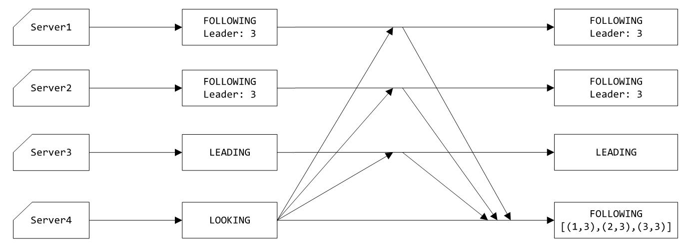
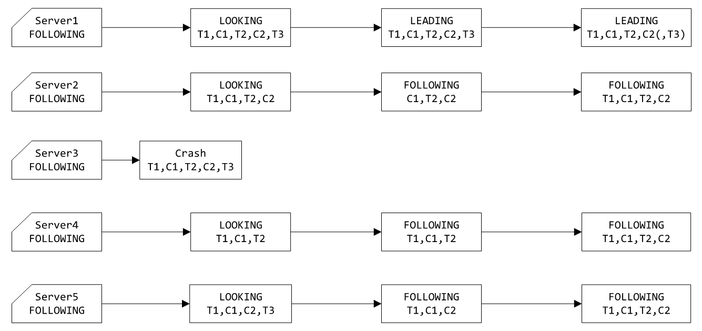
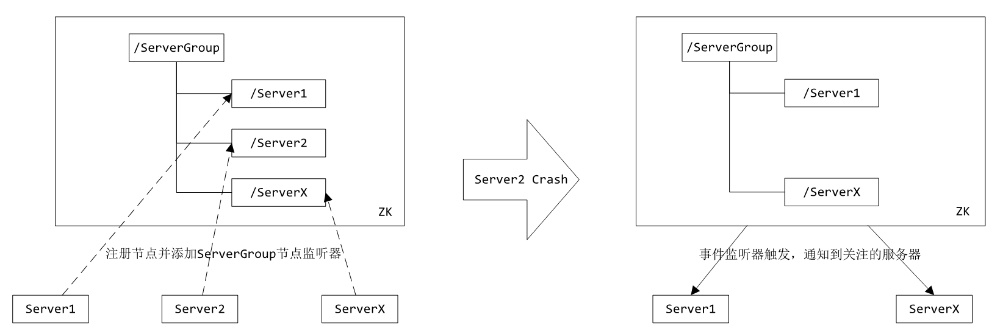
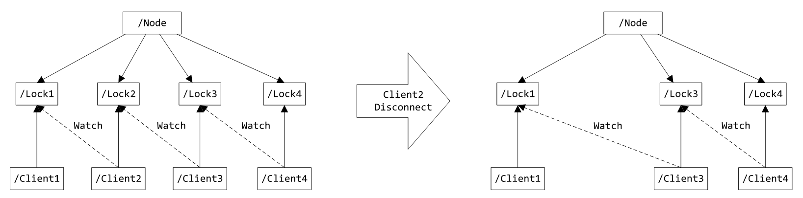

描述
ZooKeeper（简称ZK）是一个开源的分布式协调服务，其设计目标是将那些复杂且容易出错的分布式一致性服务封装起来，构成一个高效可靠的原语集，并以一系列简单易用的接口提供给用户使用。
原语： 操作系统或计算机网络用语范畴，由若干条指令组成，用于完成一定功能的一个过程，具有不可分割性，即原语的执行必须是连续的，在执行过程中不允许被中断。
特性
- 顺序一致性：客户端发起的更新会按发送顺序被应用到ZK上；
- 原子性：更新操作要么成功要么失败，不会出现中间状态；
- 单一视图：无论客户端连接的是哪个服务器，其看到的服务视图（树型结构）都是一致的；
- 可靠性：一个更新操作一旦被接受即不会意外丢失，除非被其它更新操作覆盖；
- 实时性：在一定时间（不能保证立即）内，客户端能获取到最新的数据。
数据模型
ZK提供一个多层级的节点（ZNode）命名空间，类似于文件系统。命名就是一系列用/分割的路径元素，每一个ZK节点的命名空间都是用路径进行标识的。与文件系统不同的是，这些节点都可以设置关联数据，而文件系统中只有文件节点可以存放数据而目录节点不能。
ZK为了保证高吞吐和低延迟，在内存中维护了这个树状的目录结构，这种特性使得ZK不能用于存放大量的数据，每个节点的存放数据上限为1M。
ZK保证读写都是原子操作，且每次读写操作都是对数据的完整读取或完整写入，并不提供对数据进行部分读取或者写入的操作。

节点类型
节点类型有以下三大类：
持久节点（PERSISTENT）：持久节点是指在节点创建后，就一直存在，不会因为创建该节点的客户端会话失效而消失，直到有删除操作来主动清除这个节点。
临时节点（EPHEMERAL）：在客户端会话结束后自动删除，利用临时节点的这一特性，我们可以使用临时节点来进行集群管理，包括发现服务的上下线等。
顺序节点（SEQUENTIAL）：创建时自动在指定路径之后添加%10d格式的序号，这个序号可以保证在同一个父节点下是唯一的。
通过组合可以生成如下四种类型节点：
持久节点（PERSISTENT）、持久顺序节点（PERSISTENT_SEQUENTIAL）、临时节点（EPEMERAL）和临时顺序节点（EPEMERAL_SEQUENTIAL）。
需要注意临时节点不能创建子节点。
节点属性
dataVersion：数据版本号，每次对节点进行set操作，dataVersion的值都会增加1（即使设置的是相同的数据）。cversion：子节点的版本号。当节点下的子节点有变化时，cversion的值就会增加1。aclVersion：ACL（Access Control List，访问控制）的版本号。cZxid：创建的事务id。mZxid：被修改的事务id，即每次对节点的修改都会更新mZxid。ctime：创建的时间戳。mtime：修改的时间戳。dataLength：数据长度。numChildren：子节点数量。ephemeralOwner：如果节点是临时节点，则这是节点所有者的session ID；如果不是临时节点，则该字段为零。
ZK状态的每一次改变，都对应着一个递增的Transaction id，该id称为zxid。实现中zxid是一个64位数值，高32位是集群选举周期epoch，每次选出新的Leader，epoch加1。低32位为该周期内的序号，每次周期值变化，都将低32位的序号重置。创建任意节点，或者更新任意节点的数据，或者删除任意节点，都会导致ZK状态发生改变，从而导致zxid的值增加。
示例：1
2
3
4
5
6
7
8
9
10
11
12
13[zk: localhost:2181(CONNECTED) 4] get -s /key1
werw2342
cZxid = 0x10000000d
ctime = Wed Jul 03 15:39:20 CST 2019
mZxid = 0x10000000d
mtime = Wed Jul 03 15:39:20 CST 2019
pZxid = 0x10000000d
cversion = 0
dataVersion = 0
aclVersion = 0
ephemeralOwner = 0x300157916070000
dataLength = 8
numChildren = 0
事件监听器（Watch）
事件监听器是ZK中的一个很重要的特性。ZK允许用户在指定节点上注册一些监听器，并且在一些特定事件触发的时候，ZK服务器会将事件通知给感兴趣的客户端，该机制是ZK实现分布式协调服务的重要特性。
事件监听器具有如下特点：
- 主动推送：`事件监听器被触发时，由ZK服务器主动将更新推送给客户端，而不需要客户端轮询。
- 一次性：数据变化时，监听器只会被触发一次。如果客户端想得到后续更新的通知，必须要在监听器被触发后重新注册一个事件监听器。
- 可见性：如果一个客户端在读请求中附带事件监听器，事件监听器被触发的同时再次读取数据，客户端在得到监听器消息之前肯定不可能看到更新后的数据。换句话说，更新通知先于更新结果。
- 顺序性：如果多个更新触发了多个事件监听器，那事件监听器被触发的顺序与更新顺序一致。
访问控制（ACL）
ACL的实现方式非常类似于UNIX文件的访问权限：它采用访问权限位允许或禁止对节点的各种操作以及能进行操作的范围。不同于UNIX权限的是，ZK的节点不局限于用户（文件的拥有者），组和其他人（其它）这三个标准范围。ZK不具有节点的拥有者的概念，相反，ACL指定id集以及与之对应的权限。需要注意ACL仅针对于一个特定的节点，没有递归机制。ACL使用schema:id:permission标识，各个部分意义如下：
schema：方案，可使用world/ip/auth/digest；id：授权对象ID，即权限赋予的对象或实体，例如：IP地址或用户名密码；permission：权限，包含CREATE/DELETE/READ/WRITE/ADMIN，简写为c/d/r/w/a，其中ADMIN表示可设置节点ACL权限。
示例：
1 | # world |
服务器集群

角色
Leader：负责发起并维护与各Follwer及Observer间的心跳以及主导所有写操作的执行流程。所有的写操作必须要通过Leader完成再由Leader将写操作广播给其它服务器（包括自己在内）。Follower：可直接处理并返回客户端的读请求，同时将写请求转发给Leader处理，并且负责在Leader处理写请求时对请求进行投票。Observer：角色与Follower类似，但是无投票权。目的是扩展系统，提高读取速度。Learner：Follower/Observer。Client：请求发起方。
原子消息广播协议（Zookeeper Atomic Broadcast）
为了保证写操作的一致性与可用性，ZK设计了一种名为原子广播的支持崩溃恢复的一致性协议。基于该协议，ZK实现了一种主从模式的系统架构来保持集群中各个副本之间的数据一致性。
根据ZAB协议，所有的写操作都必须通过Leader完成，Leader写入日志后再复制到所有的Follower节点。一旦Leader节点无法工作，ZAB协议能够自动从Follower中重新选出一个合适的替代者，即新的Leader，该过程被称为领导选举。
服务器状态
LOOKING：不确定Leader状态。该状态下的服务器认为当前集群中没有Leader，会发起Leader选举；FOLLOWING：跟随者状态。表明当前服务器角色是Follower，并且它知道Leader是谁；LEADING：领导者状态。表明当前服务器角色是Leader，它会维护与Follower间的心跳；OBSERVING：观察者状态。表明当前服务器角色是Observer，与Folower唯一的不同在于不参与选举，也不参与集群写操作时的投票。
会话
会话指的是ZK服务器与客户端会话。在ZK中，一个客户端连接是指客户端和服务器之间的一个TCP长连接。客户端启动的时候，首先会与服务器建立一个TCP连接，从第一次连接建立开始，客户端会话的生命周期也开始了。通过这个连接，客户端能够通过心跳检测与服务器保持有效的会话，也能够向ZK服务器发送请求并接受响应，同时还能够通过该连接接收来自服务器的Watch事件通知。
在为客户端创建会话之前，服务端首先会为每个客户端都分配一个SessionID。SessionID是ZK会话的一个重要标识，许多与会话相关的运行机制都是基于这个SessionID的，因此，无论是哪台服务器为客户端分配的SessionID，都务必保证全局唯一。
读写操作
读操作
Leader/Follower/Observer都可直接处理读数据请求（从内存中读取数据）。
写操作
- 客户端连接非
Leader服务器进行写操作时，服务器转发消息交给Leader服务器处理； Leader服务器收到写操作请求时，将其转换为一个提议（Proposal），分发给集群内所有Follwer，之后等待各个Follwer的回复（ACK）；Follower收到提议时，记录事务日志，待日志记录完成后给Leader发送ACK；Leader收到超过半数（n/2+1，Leader自己有一个）的回复后，向所有Follower和Observer发送提交（Commit）消息；Leader回复操作结果。
领导选举
投票数据结构
每个服务器在进行Leader选举时，会发送如下关键信息leader：被推举的服务器的sid；zxid：被推举的服务器上所保存的数据的最大zxid；electionEpoch：当前服务器的epoch（逻辑时钟），用来判断多个投票是否在同一轮选举周期中，每进行新一轮的投票后，都会对该值加1；peerEpoch：被推举的服务器的epoch；state：投票所属服务器的状态；sid：当前服务器的sid。
投票流程
1、自增选举轮次
ZK规定所有有效的投票都必须在同一轮次中。每个服务器在开始新一轮投票时，会先对自己维护的electionEpoch进行自增操作。
2、初始化投票
每个服务器在广播自己的投票前，会将自己的投票记录表清空。该记录表记录了收到的投票。例：服务器2投票给服务器3，服务器3投票给服务器1，则服务器1的投票记录表为(2, 3), (3, 1)。记录表中只会记录每一投票者的最后一票，如投票者更新自己的投票，则其它服务器收到该新投票后会在自己的投票记录表中更新该服务器的投票。
3、发送初始化投票
每个服务器最开始都是把票投给自己并广播投票消息给其他服务器。
4、接收并处理外部投票
收到外部投票后，首先会根据投票信息中所包含的epoch来进行不同处理：
- 外部投票的
epoch大于自己的epoch，说明服务器的选举轮次落后于其它服务器的选举轮次，此时立即清空自己的投票记录表并将自己的epoch更新为收到的epoch，之后再对比自己之前的投票与收到的投票确定是否需要变更自己的投票（投票PK），最终再次将自己的投票广播出去； - 外部投票的
epoch小于自己的epoch，当前服务器直接忽略该投票； - 外部投票的
epoch与自己的相等，此时进行投票PK。
5、投票PK
投票PK是基于(zxid,leader)的对比：
- 外部
zxid大于自己的zxid，变更自己的投票信息为(zxid,leader)并广播，另外将收到的票及自己更新后的票放入自己的投票记录表； zxid相等，外部leader大于自己的leader，变更自己的投票信息为(zxid,leader)并广播，另外将收到的票及自己更新后的票放入自己的投票记录表；- 其他情况，不做任何变更。
6、统计投票
如果已经确定有过半服务器认可了自己的投票（可能是更新后的投票），则终止投票。否则继续接收其它服务器的投票。如果超过了指定时间没有收到足够的投票，则
7、更新服务器状态
投票终止后，服务器开始更新自身状态。若过半的票投给了自己，则将自己的服务器状态更新为LEADING，否则将自己的状态更新为FOLLOWING。
领导选举场景
启动时
以三台服务器为例，流程如下图所示（由于初始情况下epoch都为1，zxid都为0，因此省略）：
1、初始时，每台服务器都处于LOOKING状态，都投票给自己并广播给其他服务器；
2、服务器1收到2和3发来的投票，由于ID的大小关系，最终会清空投票列表并更新自己的投票为服务器3并广播给其他服务器；服务器2收到1和3发来的投票，同理，最终只保留服务器3的投票，以及更新自己的投票为服务器3并广播给其他服务器；服务器3收到1和2发来的投票，由于都比自己的ID小，因此不会做任何处理；
3、服务器2收到1发来的投票，放入自己的投票列表；服务器3收到1和2发来的投票，放入自己的投票列表。此时三个服务器的投票列表相同，因此最终服务器3成为Leader，服务器1和2成为Follower。
1 | # server 1（`round`对应自己的`epoch`） |
新服务器加入

1、当服务器4启动时，初始处于LOOKING状态，epoch为1，zxid为0，向其他服务器发送投票给自己的通知；
2、其他服务器收到4发来的投票通知时，回复自己当前的状态以及投票的Leader；
3、服务器4收到其他服务器发来的状态和Leader，根据过半规则，服务器3有超过半数服务器的投票，因此服务器3仍然为Leader，服务器4切换FOLLOWING状态。
这里说明epoch（zxid）的目的是服务器4启动时，原有的ZK服务器epoch（zxid）很有可能已经>=1，因此服务器4的epoch（zxid）必定小于等于其他服务器的epoch（zxid），因此服务器4不会成为Leader。
1 | # server 4 |
Leader宕机
当Leader发生宕机时，剩下的服务器仍然按照选举规则选出Leader，需要注意此时各服务器记录的zxid有可能不一致，选举的Leader将是zxid最大的那一台服务器。
一致性保证
ZAB协议保证了在领导选举的过程中，已经被Commit的数据不会丢失，未被Commit的数据对客户端不可见。
假设如下示例：服务器3发生宕机，同步的消息列表为T1,C1,T2,C2,T3（T表示客户端发起的操作事务消息，C表示Leader发出的提交消息），其中服务器1收到的消息与服务器3完全同步，服务器2收到的消息为C1,T2,C2，服务器4收到的消息为T1,C1,T2，服务器5收到的消息为T1,C1,C2,T3。需要注意：
由于T3没有对应的提交消息，意味着收到T3的服务器不会超过一半，当前只有服务器1和服务器2收到T3，因而T3不会被广播给其他服务器；
由于T1和T2都有对应的提交消息，因此整个集群中应当有超过一半的服务器收到过T1和T2。

应用场景
集群管理
在多台服务器组成的集群中，需要监控每台服务器的状态，一旦某台服务器宕机或有新的机器加入集群，集群需要感知到，从而执行相应的处理。通常的做法是有台主机器定时获取其他机器的心跳，或其他机器定时主动汇报自己的状态，这种方式存在一定的延时，并且主机器成为单点，一旦宕机便影响整个集群。
使用ZK可以方便的实现集群管理的功能：每个服务器启动时都向ZK提出创建临时节点的请求，并且添加父节点的事件监听器，当该服务器宕机时，它创建的临时节点也被ZK删除，删除时触发事件监听器，其他服务器便能得到通知。

分布式锁
多个客户端在同一个节点下添加临时顺序节点（节点名末尾实际上是10位10进制数），每个客户端对应着一个子节点，同时关注自己的前一个节点，如果没有前一个节点（即对应的节点编号是当前最小的），则认为获得了锁。
当客户端断开连接时，对应的临时节点自动被移除，关注该节点的下一个节点将收到通知，此时再判断是否存在前一个节点，不存在则认为获得了锁，存在则关注前一个节点，添加事件监听器。

分布式协调/通知
利用事件监听器注册和异步通知机制实现对数据变更的实时处理。例如：不同系统都对ZK上同一个节点进行注册，监听节点的变化（包括节点本身内容及子节点），其中一个系统更新了节点，那么另一个系统能够收到通知，并作出相应处理。
负载均衡
服务器启动时，在指定节点（假设为Servers节点）下注册临时子节点，客户端连接服务器时在Servers节点下根据一定的负载均衡规则计算得出一个服务器节点之后与其进行连接。
ZK部署及使用
从https://mirrors.tuna.tsinghua.edu.cn/apache/zookeeper/current/可下载ZK的最新版本。
ZK的安装和配置比较简单，可以配置成单机模式，也可以配置成集群模式。
单机
在conf目录下创建zoo.cfg（可拷贝zoo_sample.cfg文件后改名），添加以下配置：1
2
3
4
5
6# 数据目录
dataDir=E:/Work/zookeeper/zookeeper/data/
# log目录
dataLogDir=D:/zookeeper/zookeeper/logs/
# 客户端连接端口
clientPort=2181
伪集群
所谓伪集群，是指在单台机器中启动多个ZK进程，并组成一个集群。
以3个ZK服务器为例，拷贝ZK安装包为三份：1
2
3|--zk1
|--zk2
|--zk3
修改zk1/conf/zoo.cfg配置为：1
2
3
4
5
6
7
8
9
10
11
12
13
14
15
16
17
18
19
20
21
22
23
24
25
26
27
28
29# ZK中的时间单元（毫秒），所有时间以时间单元为基础进行整数倍配置
# The duration of a tick in milliseconds. This is the basic unit of time in ZooKeeper.
tickTime=2000
# Follower启动时从Leader同步所有数据的时间限制（*tickTime）
# The maximum number of ticks that a follower will wait to initially synchronize with a leader.
initLimit=10
# Follower等待Leader发过来消息的最长时间（*tickTime）
# The maximum number of ticks that a follower will wait for a message (including heartbeats) from the leader.
syncLimit=5
# 数据目录
dataDir=E:/Work/zookeeper/zk1/data/
# log目录
dataLogDir=D:/zookeeper/zk1/logs/
# 客户端连接端口
clientPort=2181
# 客户端连接数量限制
#maxClientCnxns=60
# 开启autopurge选项前先阅读：
# http://zookeeper.apache.org/doc/current/zookeeperAdmin.html#sc_maintenance
# 保留在dataDir下的快照数量
#autopurge.snapRetainCount=3
# 自动清理事务日志和快照时间间隔，0标识不开启
#autopurge.purgeInterval=1
# 集群配置
server.1=localhost:2281:2381
server.2=localhost:2282:2382
server.3=localhost:2283:2383
server.4=localhost:2284:2384
之后在zk1/data下新建一个myid文件，文件中写入服务器ID：1
1
服务器2和服务器3同上，调整clientPort、dataDir和dataLogDir配置以及myid文件中的服务器ID即可。
5.3 集群
集群配置与伪集群配置类似，只是集群配置中localhost需要修改为真实的服务器IP。
由于集群模式下，各个服务器部署在不同的机器上, 因此各个服务器的conf/zoo.cfg文件可以完全相同。
5.4 启动/停止服务器
bin目录下存放着ZK服务器常用的脚本：
zkCleanup：清理ZK历史数据，包括日志文件和快照数据文件；zkCli：ZK的一个简易客户端；zkEnv：设置ZK的环境变量；zkServer：ZK服务器的启动、停止、和重启脚本。
Linux：启动服务器执行./zkServer.sh start，停止服务器执行./zkServer.sh stop，重启服务器执行./zkServer.sh restart；Windows：启动服务器执行zkServer.cmd，停止服务器直接关闭控制台窗口或Ctrl+C。1
2
3
4
5
6
7
8$ ./zkServer.sh start
ZooKeeper JMX enabled by default
Using config: D:\zookeeper\zk5\conf\zoo.cfg
Starting zookeeper ... STARTED
$ ./zkServer.sh stop
ZooKeeper JMX enabled by default
Using config: D:\zookeeper\zk5\conf\zoo.cfg
Stopping zookeeper ... STOPPED
通过./zkServer.sh status可查询服务器状态：1
2
3
4
5
6
7
8
9
10
11
12
13
14
15$ ./zkServer.sh status
ZooKeeper JMX enabled by default
Using config: D:\zookeeper\zk1\conf\zoo.cfg
Client port found: 2181. Client address: localhost.
Mode: follower
$ cd ../../zk2/bin && ./zkServer.sh status
ZooKeeper JMX enabled by default
Using config: D:\zookeeper\zk2\conf\zoo.cfg
Client port found: 2182. Client address: localhost.
Mode: follower
$ cd ../../zk3/bin && ./zkServer.sh status
ZooKeeper JMX enabled by default
Using config: D:\zookeeper\zk3\conf\zoo.cfg
Client port found: 2183. Client address: localhost.
Mode: leader
客户端命令
服务器开启成功后，通过./zkCli.sh（Windows下执行zkCli.cmd）启动客户端并与服务器连接。
默认连接127.0.0.1:2181，可在命令之后加上-server ip:port连接指定服务器。1
2
3
4WATCHER::
WatchedEvent state:SyncConnected type:None path:null
[zk: localhost:2181(CONNECTED) 0]
输入help命令查看客户端支持的命令列表：1
2
3
4
5
6
7
8
9
10
11
12
13
14
15
16
17
18
19
20
21
22
23
24
25
26
27
28[zk: localhost:2181(CONNECTED) 0] help
ZooKeeper -server host:port cmd args
addauth scheme auth
close
config [-c] [-w] [-s]
connect host:port
create [-s] [-e] [-c] [-t ttl] path [data] [acl]
delete [-v version] path
deleteall path
delquota [-n|-b] path
get [-s] [-w] path
getAcl [-s] path
history
listquota path
ls [-s] [-w] [-R] path
ls2 path [watch]
printwatches on|off
quit
reconfig [-s] [-v version] [[-file path] | [-members serverID=host:port1:port2;port3[,...]*]] | [-add serverId=host:port1:port2;port3[,...]]* [-remove serverId[,...]*]
redo cmdno
removewatches path [-c|-d|-a] [-l]
rmr path
set [-s] [-v version] path data
setAcl [-s] [-v version] [-R] path acl
setquota -n|-b val path
stat [-w] path
sync path
Command not found: Command not found help
C API应用
1 |
|
运行结果如下：1
2
3
4
5
6
7
8
9
10
11
12
13
14
15
16
17
18
19
20
21
22
23
24
25
26
27
28
29
30
31
32
33
34
35
36
37
38
39
40
41
42
43
44
45
462019-07-08 22:13:05,058:14408(0x30bc):ZOO_INFO@log_env@1080: Client environment:zookeeper.version=zookeeper C client 3.5.5
2019-07-08 22:13:05,064:14408(0x30bc):ZOO_INFO@log_env@1086: Client environment:host.name=<not implemented>
2019-07-08 22:13:05,068:14408(0x30bc):ZOO_INFO@log_env@1095: Client environment:os.name=<not implemented>
2019-07-08 22:13:05,073:14408(0x30bc):ZOO_INFO@log_env@1096: Client environment:os.arch=<not implemented>
2019-07-08 22:13:05,077:14408(0x30bc):ZOO_INFO@log_env@1097: Client environment:os.version=<not implemented>
2019-07-08 22:13:05,080:14408(0x30bc):ZOO_INFO@log_env@1103: Client environment:user.name=<not implemented>
2019-07-08 22:13:05,085:14408(0x30bc):ZOO_INFO@log_env@1114: Client environment:user.home=<not implemented>
2019-07-08 22:13:05,089:14408(0x30bc):ZOO_INFO@log_env@1121: Client environment:user.dir=E:\Work\Misc\ZKTest\Test
2019-07-08 22:13:05,095:14408(0x30bc):ZOO_INFO@zookeeper_init_internal@1164: Initiating client connection, host=127.0.0.1:2181 sessionTimeout=30000 watcher=0118
5230 sessionId=0 sessionPasswd=<null> context=011B2B9C flags=0
2019-07-08 22:13:05,124:14408(0x30bc):ZOO_DEBUG@start_threads@221: starting threads...
2019-07-08 22:13:05,134:14408(0x3898):ZOO_DEBUG@do_completion@471: started completion thread
2019-07-08 22:13:05,134:14408(0x30bc):ZOO_DEBUG@zoo_acreate@3586: Sending request xid=0x5d234f71 for path [/key1] to 0.0.0.0:0
2019-07-08 22:13:05,144:14408(0x30bc):ZOO_DEBUG@zoo_awexists@3696: Sending request xid=0x5d234f72 for path [/key1] to 0.0.0.0:0
2019-07-08 22:13:05,134:14408(0x1224):ZOO_DEBUG@do_io@403: started IO thread
2019-07-08 22:13:05,155:14408(0x1224):ZOO_DEBUG@get_next_server_in_reconfig@1310: [OLD] count=0 capacity=0 next=0 hasnext=0
2019-07-08 22:13:05,166:14408(0x1224):ZOO_DEBUG@get_next_server_in_reconfig@1313: [NEW] count=1 capacity=16 next=0 hasnext=1
2019-07-08 22:13:05,171:14408(0x1224):ZOO_DEBUG@get_next_server_in_reconfig@1322: Using next from NEW=127.0.0.1:2181
2019-07-08 22:13:05,176:14408(0x1224):ZOO_DEBUG@zookeeper_connect@2210: [zk] connect()
2019-07-08 22:13:05,184:14408(0x1224):ZOO_INFO@check_events@2451: initiated connection to server [127.0.0.1:2181]
2019-07-08 22:13:05,211:14408(0x1224):ZOO_INFO@check_events@2503: session establishment complete on server [127.0.0.1:2181], sessionId=0x1000079413a000b, negotiated timeout=30000
2019-07-08 22:13:05,219:14408(0x1224):ZOO_DEBUG@check_events@2509: Calling a watcher for a ZOO_SESSION_EVENT and the state=ZOO_CONNECTED_STATE
2019-07-08 22:13:05,225:14408(0x3898):ZOO_DEBUG@process_completions@2789: Calling a watcher for node [], type = -1 event=ZOO_SESSION_EVENT
global_watcher_callback: type=-1 state=3 path=
2019-07-08 22:13:05,272:14408(0x1224):ZOO_DEBUG@zookeeper_process@2945: Queueing asynchronous response
2019-07-08 22:13:05,277:14408(0x1224):ZOO_DEBUG@zookeeper_process@2945: Queueing asynchronous response
2019-07-08 22:13:05,277:14408(0x3898):ZOO_DEBUG@deserialize_response@2710: Calling COMPLETION_STRING for xid=0x5d234f71 failed=1, rc=-110
completion_callback: rc=-110 value=nullptr data=completion_callback
2019-07-08 22:13:05,290:14408(0x3898):ZOO_DEBUG@deserialize_response@2674: Calling COMPLETION_STAT for xid=0x5d234f72 failed=0 rc=0
completion_callback: rc=0 data=aexists
state:
czxid=4294967323
mzxid=4294967323
ctime=1562594380609
mtime=1562594380609
version=0
cversion=0
aversion=0
ephemeralOwner=0
dataLength=13
numChildren=0
pzxid=4294967323
2019-07-08 22:13:08,152:14408(0x1224):ZOO_DEBUG@do_io@458: IO thread terminated
2019-07-08 22:13:08,155:14408(0x3898):ZOO_DEBUG@do_completion@481: completion thread terminated
2019-07-08 22:13:08,160:14408(0x30bc):ZOO_INFO@zookeeper_close@3254: Closing zookeeper sessionId=0x1000079413a000b to [127.0.0.1:2181]
通过官方客户端验证结果一致：1
2
3
4
5
6
7
8
9
10
11
12
13
14
15[zk: localhost:2181(CONNECTED) 10] get /key1
hello animal!
[zk: localhost:2181(CONNECTED) 11] get -s /key1
hello animal!
cZxid = 0x10000001b
ctime = Mon Jul 08 21:59:40 CST 2019
mZxid = 0x10000001b
mtime = Mon Jul 08 21:59:40 CST 2019
pZxid = 0x10000001b
cversion = 0
dataVersion = 0
aclVersion = 0
ephemeralOwner = 0x0
dataLength = 13
numChildren = 0
一些问题
新的Leader选出时同步方式
SNAP-全量同步
条件：peerLastZxid<minCommittedLog
二者数据差异太大，Follower数据过于陈旧，Leader发送快照SNAP指令给Follower全量同步数据。DIFF-增量同步
条件：minCommittedLog<=peerLastZxid<=maxCommittedLog
二者数据差异不大，Follower上有一些Leader上已经提交的提议未同步，此时需要增量提交。TRUNC-仅回滚同步
条件：peerLastZxid>minCommittedLog
证明Follower上有些提议并未在Leader上提交，Follower需要回滚到zxid为minCommittedLog对应的事务操作。TRUNC+DIFF-回滚+增量同步
条件：minCommittedLog<=peerLastZxid<=maxCommittedLog且原Leader已经将事务Tx提交到本地事务日志中，但没有成功发起提议就宕机了；之后集群重新选举出新Leader，新Leader收到了若干新的更新操作并发起了提议，之后原Leader重新加入到集群中。
此时原Leader和新Leader都有对方未提交的事务，原Leader加入集群后需要先回滚Tx之后同步新Leader的数据。
丢包问题
提议消息：Leader会定时向Follower发送PING消息，如果Leader发送出去的提议消息超过一定时间（tick * syncLimit，默认10秒）没有收到Follower的ACK，会导致PING失败，最终Leader会断开与Follower的连接。因为连接断开，Follower会退出FOLLOWING状态（收包出现异常），重新进入LOOKING状态。
提交消息：此时客户端连接该Follower所看到的数据不是实时的。下一次收到提交消息时，会终止Follower进程，因为收到的提交消息中的zxid与上一次待提交的提议对应的zxid不匹配。
动态扩容问题
逐个服务器重启：每次操作一台服务器，更新配置后重启，优先操作新的服务器。
整体重启：停止所有服务器，更新配置后全部启动。
奇数服务器数量问题
任意数量台服务器都可以构建为一个ZK集群。但考虑如下情况：
- 服务器数量为偶数（假设为
2n），过半为n+1，允许宕掉的服务器数量为n-1 - 服务器数量为奇数（假设为
2n-1），过半为n，允许宕掉的服务器数量为n-1
配置为奇数数量相比于偶数数量少占用一台服务器，因此奇数数量服务器配置更有优势。
参考链接
[1] 分布式服务框架 Zookeeper — 管理分布式环境中的数据
[2] 【分布式】Zookeeper与Paxos
[3] 深入浅出Zookeeper（二） 基于Zookeeper的分布式锁与领导选举
[4] 深入浅出Zookeeper（一） Zookeeper架构及FastLeaderElection机制
[5] 理解zookeeper选举机制
[6] Zookeeper选举算法原理（摘选）
[7] Zookeeper C API 指南一(准备工作)
[8] ZooKeeper - Data Sync